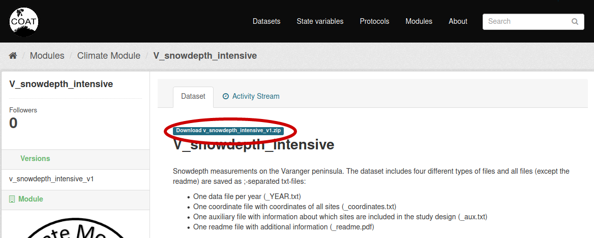
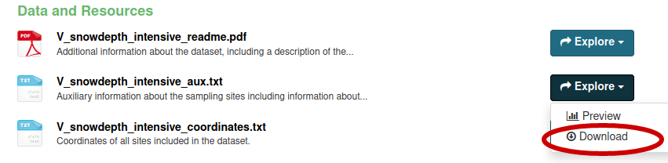
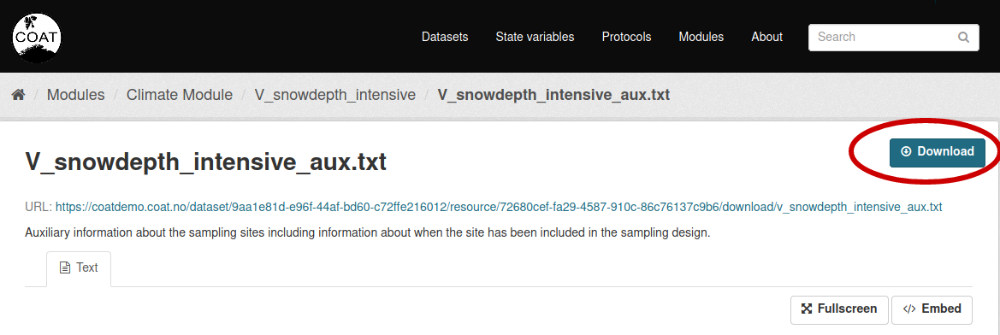

Data download¶
There are multiple options for downloading data from the COAT data portal, listed below.
Bulk download from the portal interface¶
To bulk download all the data belonging to ta dataset, a user can click on the button just above the dataset name. This will create a zip package containing all data files, and spawn a download.
Warning: at the moment, datasets containing many or heavy data files could result in an error during package creation. We suggest to choose the bulk download from the API using a script (see below)
Download single data file¶
To download a single data file, click on the**Explore** button on the right of a data, and then dwonalod, from the dataset detailed view:
As an alternative, it is possible to download a file from its detailed view:
Download using the API¶
It is possible to download bulk data (or specific choices) using scripts interfacing to the data portal’s APIs. See some examples here: